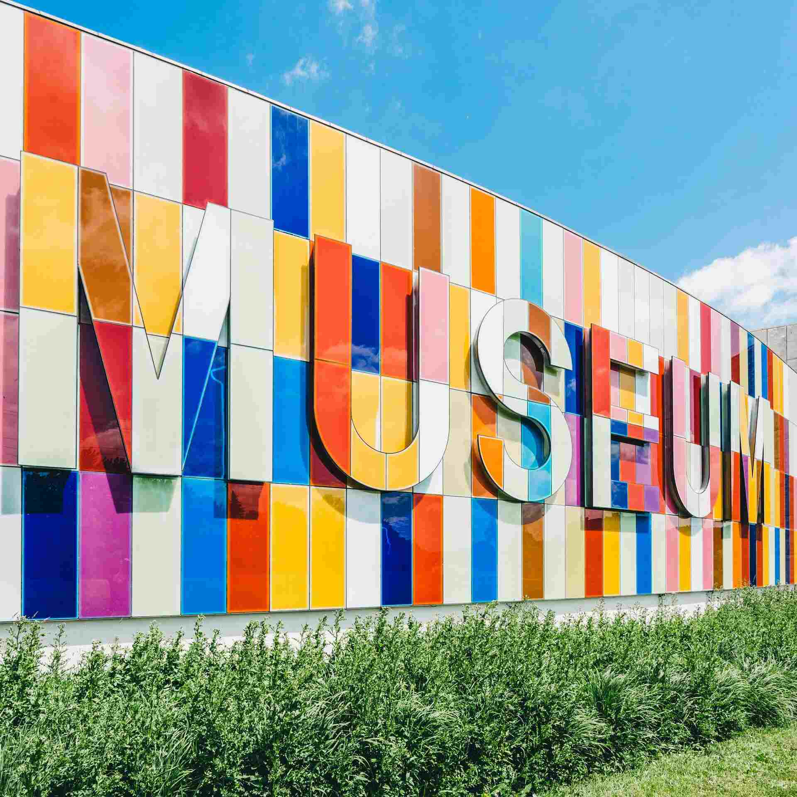

Explore the Wonders of Science

Come join us at the Community Science Museum where we’re committed
to making science accessible to all.
The aim of our museum is to create a space where everyone can
experience the wonders of our discoveries and perhaps even ignite a
lifelong passion to continue the exploration of the world around us.